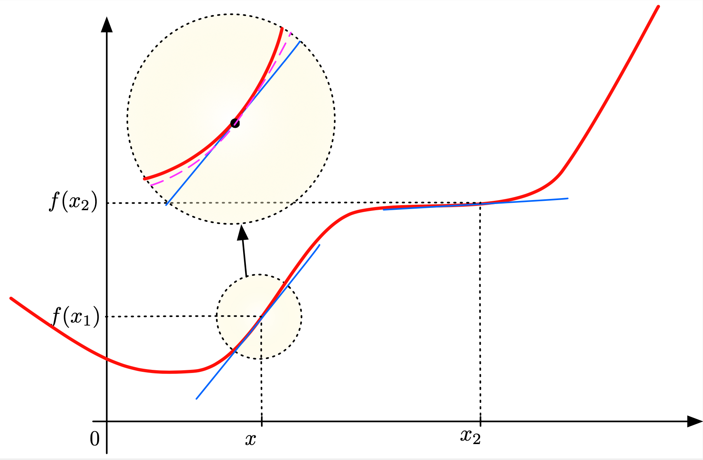

6.1. A reminder of differential calculus¶
Here, we recall a few mathematical facts from differential calculus.
6.1.1. Derivatives in normed vector spaces¶
The Fréchet derivative is the generalization to arbitrary normed vector spaces of the familiar derivative of a function \(f: \R \to \R\). For a given point \(x \in \R\), the derivative \(f^\prime(x)\) is defined as the following limit, when it exists:
visually, \(f^\prime(x)\) is the slope of the tangent line to the graph of \(f\) at \(x\). This expression can be re-arranged into an approximation formula for \(f\) near \(x\):
where the notation \(\text{o}(h)\) stands for an unspecified function of \(h\) which tends to \(0\) faster than \(h\) as \(h \to 0\): \(\lim_{h\to 0} \frac{\text{o}(h)}{h} = 0\). Roughly speaking, when "small" perturbations \((x+h)\), \(h \ll 1\), are considered around \(x\), a coarse approximation of the corresponding values \(f(x+h)\) is the (\(h\)-independent) value \(f(x)\). A more accurate "first-order" approximation of \(h \mapsto f(x+h)\) (up to a remainder of the order \(\text{o}(h)\)) is the affine function \(h \mapsto f(x) + f^\prime(x) h\), see Fig. 6.1.
{kind=link}

Fig. 6.1 Interpretation of the derivative of a function \(f : \R \to \R\): when "zooming" on a point \(x \in \R\), the function \(h \mapsto f(x+h)\) resembles the constant value \(f(x)\); a more precise approximation is given by the affine function \(h \mapsto f(x) + f^\prime(x)(h)\) (whose graph is the blue line), and an even more precise approximation is given by the second-order expansion \(h \mapsto f(x) + f^\prime(x) h +\frac12 f^{\prime\prime}(x) h^2\) (in purple)¶
Definition 6.1
Let \((E,||\cdot ||_E)\) and \((F, ||\cdot ||_F)\) be two normed vector spaces, and let \(U\) be an open subset of \(E\). One function \(f : U \to F\) is called differentiable in the sense of Fréchet at some point \(x \in U\) if there exists a linear, continuous mapping \(L : E \to F\) such that
In such case, the linear mapping \(L\) is unique; it is denoted by \(f^\prime(x): E \to F\) and it is called the Fréchet derivative of \(f\) at \(x\).
The following result is fundamental.
6.1.2. Dual spaces¶
Let us start with a definition.
Definition 6.2
Let \((E,\lvert\lvert \cdot \lvert\lvert_E)\) be a normed vector space. The dual space \((E^*,\lvert\lvert \cdot \lvert\lvert_{E^*})\) of \(E\) is the vector space of continuous linear forms on \(E\), that is:
The norm \(\lvert\lvert \ell \lvert\lvert_{E^*}\) of a linear and continuous form \(\ell \in E^*\) is the best constant (i.e. the smallest, most accurate) in the relation defining its continuity.
\(E\) is a Banach space (even if \(E\) is not).
It is often interesting to try and compare the dual space \(E^*\) with \(E\) itself. To emphasize the symmetry between both spaces, it is cutsomary to denote:
The notation \(\langle,\cdot,\cdot \langle_{E^*,E}\) is referred to as the duality bracket.
6.1.3. Hilbert spaces¶
For simplicity, we focus on the case of real Hilbert spaces, but most of this material extends to complex vector spaces.
Definition 6.3
Let \(V\) be a vector space. An inner product \(a\) on \(V\) is a mapping \(a : V \times V \to \R\) which is
Bilinear, i.e. it is linear with respect to the first variable:
\[\forall u,v,w \in V, \lambda, \mu \in \R, \quad a(\lambda u + \mu v,w) = \lambda a(u,w) + \mu a(v,w), \]and also with respect to the second variable:\[\forall u,v,w \in V, \lambda, \mu \in \R, \quad a(w,\lambda u + \mu v) = \lambda a(w,u) + \mu a(w,v). \]Symmetric: for all \(u,v \in V\), it holds \(a(u,v) = a(v,u)\).
Positive: for all \(u \in V\), it holds \(a(u,u) \geq 0\).
Positive definition: forall \(u \in V\), \(a(u,u) =0 \Rightarrow u=0\).
A fundamental fact about inner products is that they induce a norm.
Lemma 6.1 (Cauchy-Schwarz inequality)
Let \(V\) be a vector space, equipped with an inner product \(a\). Then, the following inequality holds true:
Definition 6.4
A pre-Hilbert space \((H,(\cdot,\cdot)_H)\) which is complete for the norm \(\lvert\lvert \cdot \lvert\lvert_H\) is called a Hilbert space.
The gradient is the direction of steepest variation.